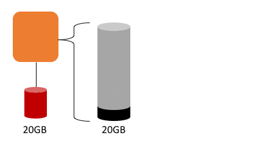

Custom AWS Batch compute resources for genomics
A default AWS Batch environment assumes that the storage available to the Amazon ECS-Optimized AMI meets the needs of most customers. Any other needs, such as the large scratch storage requirements noted above, or devices like GPUs, can be handled by providing AWS Batch with a custom Compute Resource AMI.
Genomics is a data-heavy workload and requires some modification to the standard AWS Batch processing environment. In particular, we need the underlying instance storage that tasks (AWS Batch Jobs) run on top of to meet unpredictable runtime demands.
We have provided a script (see the next section) that customizes the ECS-Optimized AMI to add a working directory that the Jobs will use to write data. That directory will be monitored by a process that inspects the free space available and adds more EBS volumes and expands the filesystem on the fly, like so:

Create a custom AMI
We have provided a Python script that sets up the above.
The script will:
- Launch an EC2 instance from the ECS-Optimized AMI with a encrypted EBS volumes for the Docker containers and scratch space
- Adjust the system settings to mount the scratch on instance start.
- Install and configure a small service to monitor and automatically expand the scratch space by adding new EBS volume
- Make the necessary adjustments to the Amazon Elastic Container Service (ECS) agent to work with AWS Batch
- Adjust the network settings to allow for containers to query instance metadata for their Task IAM roles.
# Download the script and install the requirements
curl -O https://raw.githubusercontent.com/aws-samples/aws-batch-genomics/master/src/custom-ami/create-custom-ami.py
pip install boto3
# Run the script to see the help
python create-custom-ami.py --help
# Output:
# No default VPC found. You must provide *both* VPC and Subnet IDs that are able to access public IP domains on CLI
# usage: create-genomics-ami.py [-h] [--scratch_mount_point SCRATCH_MOUNT_POINT]
# [--key-pair-name KEY_PAIR_NAME]
# [--vpc-id VPC_ID] [--subnet-id SUBNET_ID]
# [--security-group-id SECURITY_GROUP_ID]
# [--terminate-instance] [--no-terminate-instance]
Note
If you are unable to leverage this script, you likely don't have the permissions to work in this enviroment. Talk with your account administrator and show them this guide.
The --key-pair-name parameter defaults to "genomics-ami". The script will create the key pair if it does not exist and write out a PEM file (genomics-ami.pem) to the same directory as where you ran the script. If the key pair already exists, we assume that you know how to find it for your use.
By default, the script terminates the new instance. If you want to leave the instance up to SSH into and review, provice the --no-terminate-instance argument.
Most new accounts have a default VPC, but if this is not the case, or if you want to leverage a non-default VPC, then supply both the --vpc-id and --subnet-id parameters.
The script takes about 10 minutes to run, you may want to take a  or
or  break at this point. Here is an example of the output from running the script (values for ID's have been changed):
break at this point. Here is an example of the output from running the script (values for ID's have been changed):
Getting the security group from name GenomicsAmiSG-subnet-123ab123
Security Group GenomicsAmiSG-subnet-123ab123 does not exist. Creating.
Key Pair genomics-ami-west2 does not exist. Creating.
Key Pair PEM file written to genomics-ami-west2.pem
Launching a new EC2 instance.
Waiting on instance to have a IP...[ 111.222.111.222 ].
Waiting on instance to pass health checks.................................instance available and healthy.
Minting a new AMI...........................new AMI [ami-123abc123] created.
Terminating instance...terminated.
Resources that were created on your behalf:
* EC2 Key Pair: genomics-ami-west2
* EC2 Security Group: sg-12ab1234
* EC2 Instance ID: i-01234abcde2134
* EC2 AMI ImageId: ami-123abc123
Take note the returned EC2 AMI ImageId. We will use that for the AWS Batch setup.
Once the script completes, you have a new AMI ID to give to AWS Batch. Make a note of the AMI ID that was returned, we will need it for future sections. If you chose to not terminate the instance, you can also SSH into the server to review the services. Be sure to terminate the instance after you are done. Here is an example using the AWS CLI.
aws ec2 terminate-instances --instance-ids i-01234abcde2134